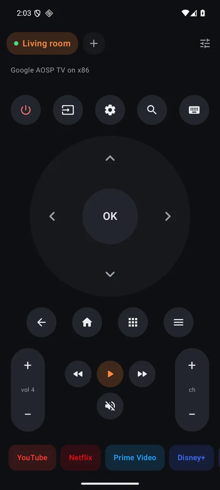
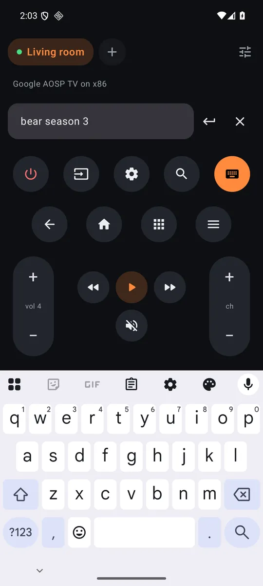

Works with your TV
Any Android TV or Google TV: Xiaomi Mi TV, Mi Box and TV Stick, Sony, TCL, Philips, Hisense, Chromecast with Google TV, Nvidia Shield. It uses the same protocol as Google's own remote.
Free · no ads · no account
When the TV asks for text, your phone keyboard opens with what's already on screen. Swipe, autocorrect, paste, backspace: the TV follows letter for letter.


Any Android TV or Google TV: Xiaomi Mi TV, Mi Box and TV Stick, Sony, TCL, Philips, Hisense, Chromecast with Google TV, Nvidia Shield. It uses the same protocol as Google's own remote.
Sofa finds the TVs on your Wi-Fi by itself. Pair each one once with the code it shows, name it, and switch with a tap. One button turns them all off at bedtime.
Big D-pad or a touchpad, hold to repeat, long-press OK, the phone's volume buttons drive the TV, and a little tick on every press. One tap opens YouTube, Netflix, Prime Video, Disney+, Max, Spotify, Plex or Twitch.
The phone talks to the TV directly over your Wi-Fi, encrypted. No cloud, no ads, no analytics, no account. The source is public.
TV not found? Use "Enter the TV's IP address" (TV settings, Network, Status). If pairing fails on an older Android TV, update or clear data of "Android TV Remote Service" in the TV's app settings.
Built and signed by GitHub Actions from the public source. Each APK's SHA-256 is published next to it; the signing certificate's SHA-256 is f84566e2bf782439556d1ee4a66e3957901c615827898a6d1e214ea0e28bfe60.